콘텐츠 상세설계 · 디자인 & 개발 전략
전시장 안의 체험 구조와, 전시장 밖으로 관객을 데려오는 웹을 한 구조로 묶었습니다. 전시장이 과 전시장과 떨어져 있어 웹은 홍보용 · 현장용 2개로 나눕니다.
메인 이외의 대표 화면은 "실측 스튜디오를 보여주는 섹션"입니다. 와이어 스케치를 바로 웹으로 구현해 배포했습니다.
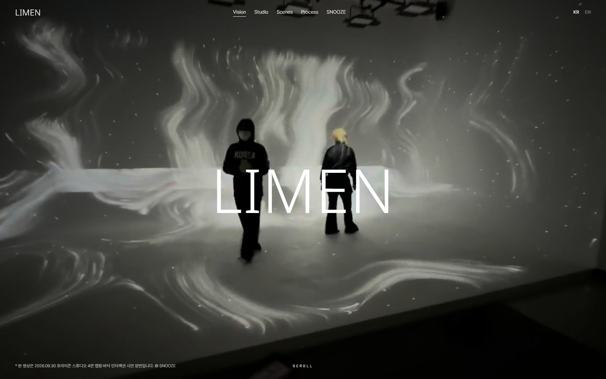
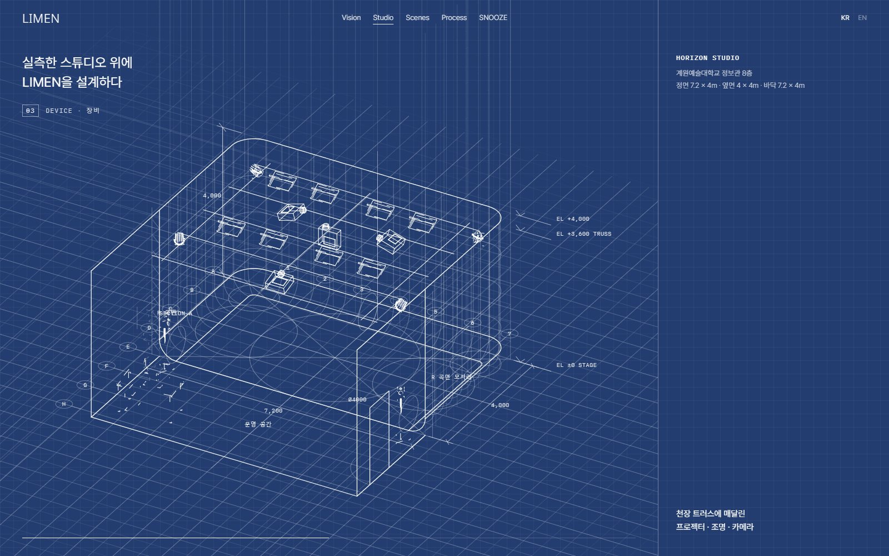
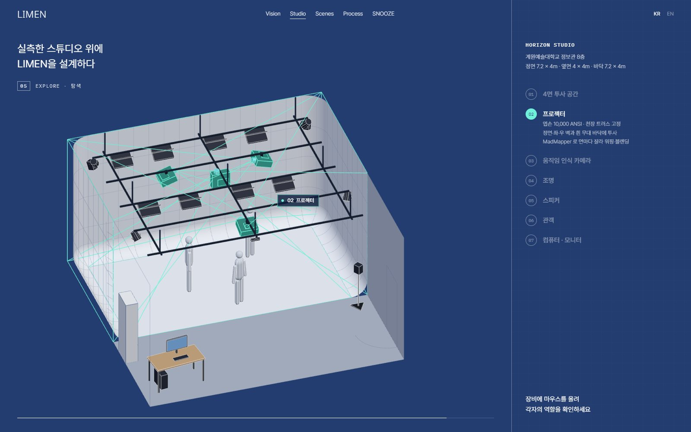
조작 장치 없이 "걷기"만으로 체험합니다. 단계마다 관객의 행동과 공간(바닥 · 벽)의 반응을 짝지었습니다.
필요한 기능마다 쓸 기술과 출처를 정하고, 직접 시험해 본 상태를 함께 적었습니다.
| 기능 | 구현 방안 | 오픈소스 · 자료 | 분석 · 근거 | 상태 |
|---|---|---|---|---|
| 위치 감지 | Kinect v2 천장 철골 · 무대 안쪽 사선 촬영 → 사람 위치를 바닥 좌표로 | Kinect for Windows SDK 2.0, Kinect v2 Unity Asset | 암실에서 RGB 보다 IR 뎁스가 안정적 | 천장 설치 · 현장 확인 예정 |
| 4면 통합 출력 | 방을 전개도로 펼친 Unity 씬 1개 → 3800×2000 텍스처 | Unity (Built-in RP), 자체 RoomAtlasSource 뼈대 | 면마다 씬을 나누면 모서리에서 끊김 | 현장 성공 |
| 영상 전달 | 같은 PC 안에서 GPU 텍스처 공유 | KlakSpout (Keijiro, MIT) → MadMapper | 캡처 카드 없이 지연 최소 | 현장 성공 |
| 4면 워핑 · 블렌딩 | 면마다 잘라 네 점 워핑, 곡면 모서리 블렌딩 | MadMapper (시설 라이선스) | 9/23 4면 싱크 테스트 | 성공 |
| 장면 알고리즘 | 개미 = 페로몬 스티그머지, 반딧불이 = 구라모토 동기화, 흐름 = 컬 노이즈 | Physarum/Ant 알고리즘 문헌, 구라모토 모형 → numpy 로 먼저 검증 | 사람을 "피해서" 돌아가기, 가까울수록 밝게 | 에디터 검증 |
| 흔적 누적 | 지나간 자리를 지우지 않는 누적 레이어 | FLOORBLOOM (꽃이 남는 바닥) 시안 | 기획의 "타인의 흔적" 요구 | 시안 |
| 웹 | three.js · GSAP ScrollTrigger · Lenis | three.js(MIT), GSAP, Lenis(MIT) | 레퍼런스 96곳 보드로 분석 | 배포 |
"타인의 기준이 내 선택에 들어와 있음을 알아차리는 순간"을 네 개의 키워드로 시각화합니다.
LIMEN 은 라틴어로 문턱. 꿈과 깸, 남의 기준과 나의 선택 사이의 경계
관객이 오기 전부터 흐르는 세계. 정보 · 타인의 선택 · 사회적 기준
리뷰와 별점처럼, 앞사람의 선택이 다음 사람의 환경이 됨
통제가 아니라 관계. 자각몽처럼 공간은 그대로, 인식만 바뀜
세계는 이미 흐르고 있고, 고르는 자리는 발밑에 있다.
디자인 원칙 · 모든 면을 반응시키지 않는다 / 빛은 어둠에서 스스로 빛난다 / 사람의 흔적은 지우지 않는다
공간 연출은 몰입형 미디어아트에서, 흔적과 인터랙션은 데이터 시각화 · 웹 실험에서 가져왔습니다. (전체 96곳 레퍼런스 보드 별도)
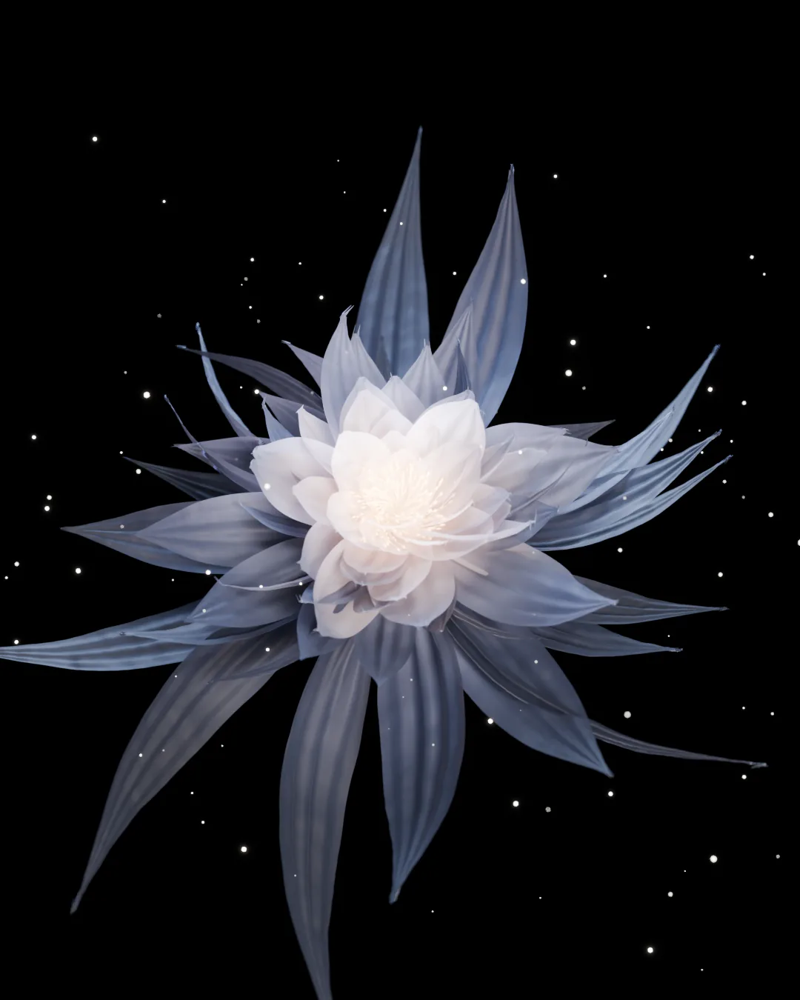
무드 · 밤의 꽃 (팀 R&D)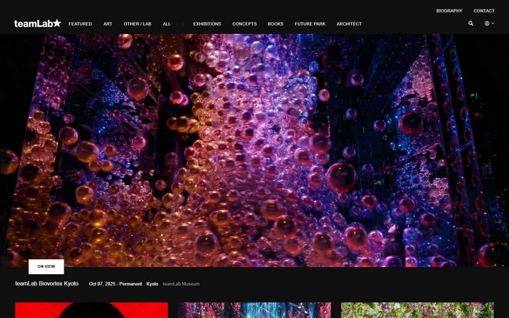
teamLab · 몰입 공간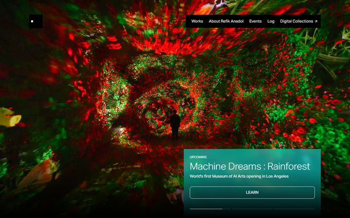
Refik Anadol · 데이터 흐름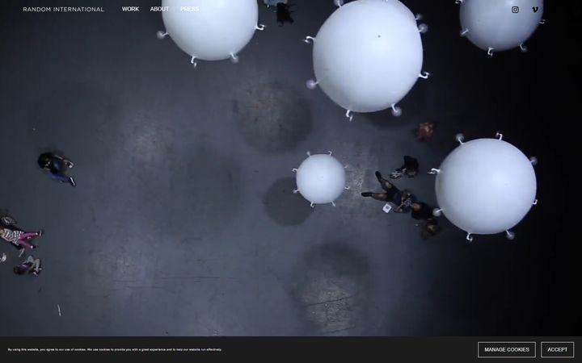
Random Intl. · 반응형 설치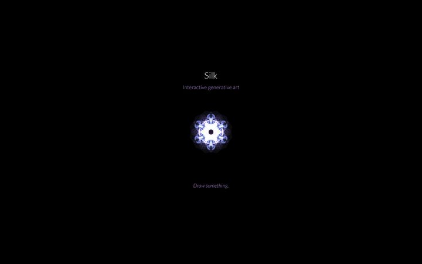
Weavesilk · 빛의 흔적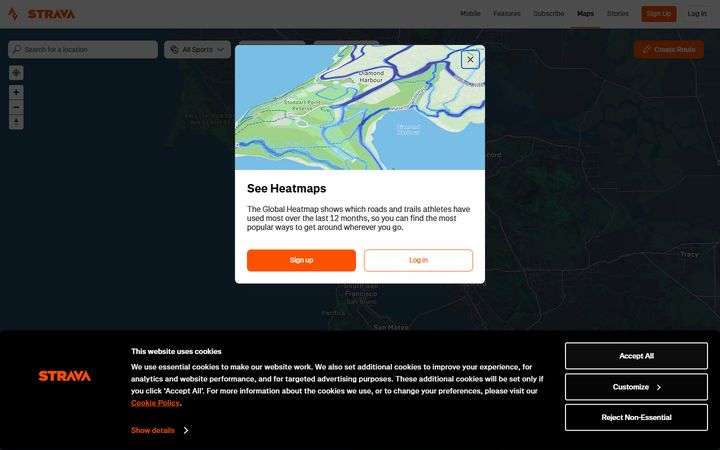
Strava · 누적 동선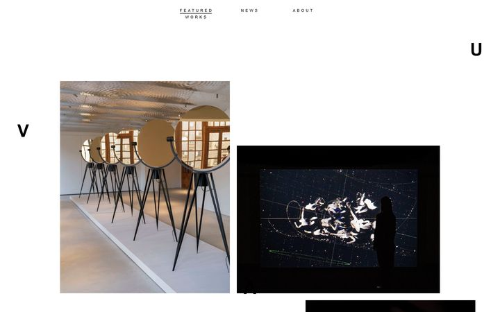
UVA · 빛과 공간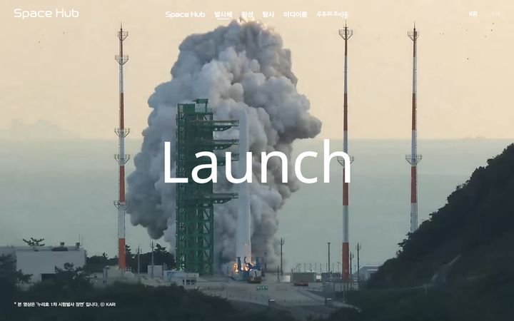
Hanwha Launch · 웹 구조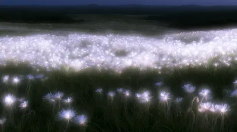
무드 · 밤의 초원어둠 위에 스스로 빛나는 흰빛이 기본입니다. 색은 장면마다 한 가지만 더합니다.
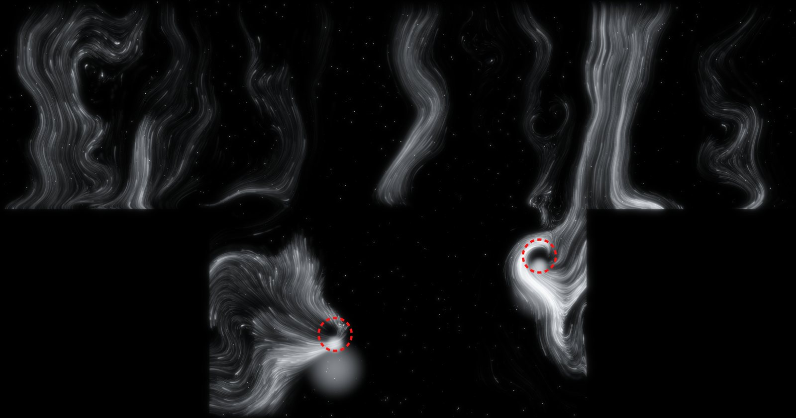
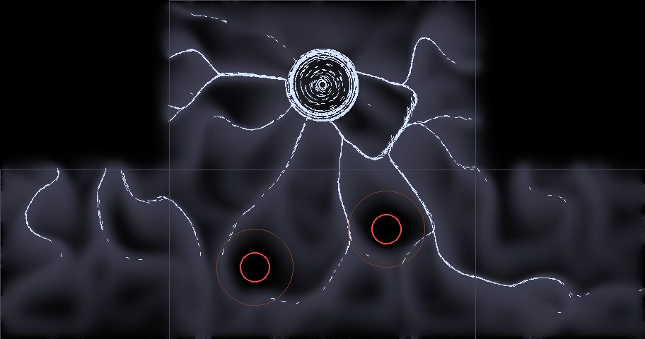
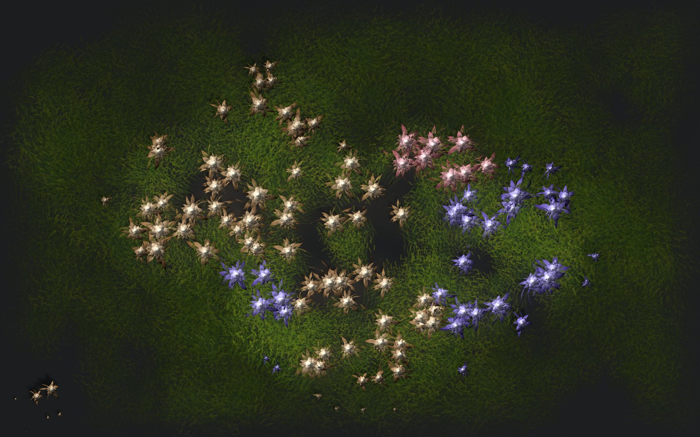
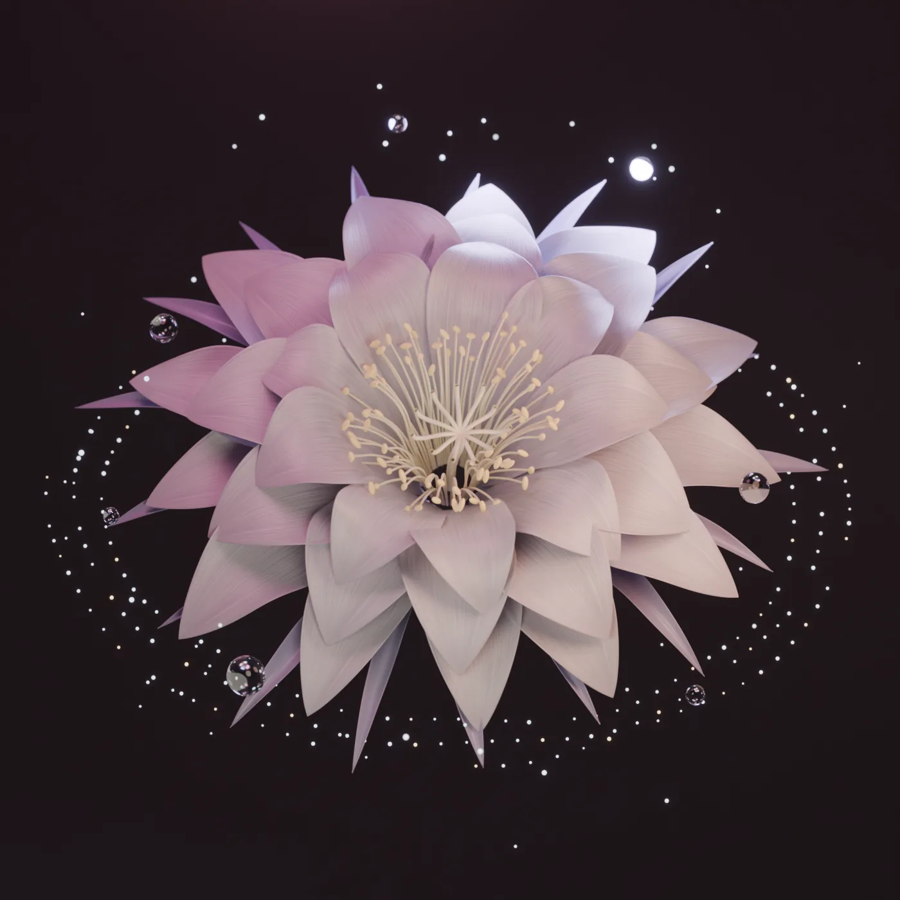
스토리보드 장면을 Unity 4면 씬으로 옮겨 디자인 엘리먼트를 적용했습니다. 위는 4면 전개도(좌 · 정면 · 우 / 아래 바닥)입니다.
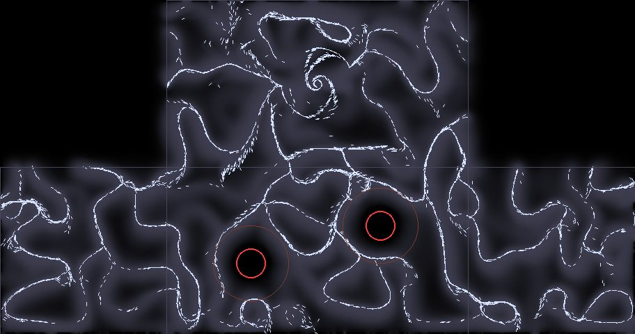
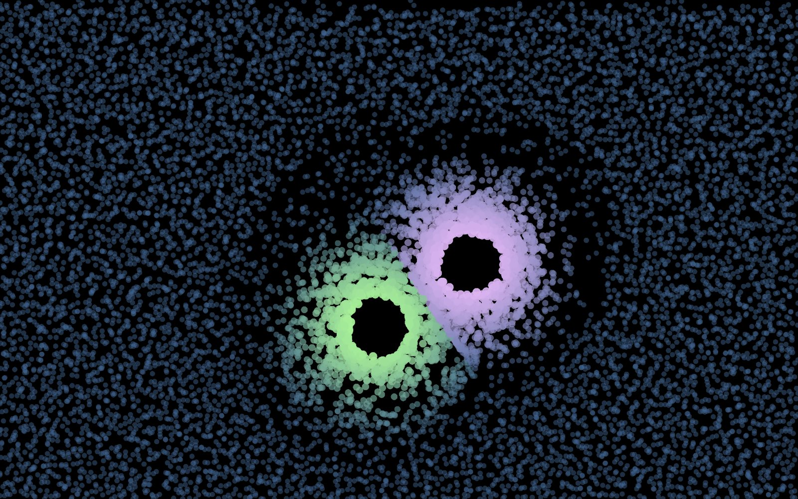
계원예술대학교 정보관 8층. 모서리가 곡면으로 이어진 흰 사이클로라마 공간의 실측 치수를 그대로 3D 로 옮겼습니다.
스토리보드 7개 장면마다 필요한 기술과 외부 사례 · 소스를 짝지었습니다. 바닥 반응은 1 · 3 · 4 · 7, 나머지는 자동 연출이라 프리렌더도 허용합니다. 시간은 아직 초 단위 미정입니다.
| 장면 · 반응 | 필요 기술 | 외부 사례 · 소스 | 상태 |
|---|---|---|---|
| 1 개미 바닥 반응 | 흰 점 군집 · 관객을 피해 우회 → 재합류 · 정해진 시간에 정면 중앙 흰 원으로 수렴 | Ant colony / Physarum 군집 문헌 · 자체 ANTS 씬 | ANTS 씬 · 에디터 |
| 2 터널 자동 | 빛의 중심으로 흡입 + 약한 회전 · 좌우 벽·바닥 스트릭 · 가속 후 암전 | 터널·스트릭 셰이더 예제 · 프리렌더 가능 | 미착수 |
| 3 반딧불이 바닥 반응 | 관객 근처만 더 밝게 + 구라모토 동기화로 하나의 호흡 · 왼쪽 벽에 한 점 남기기 | Strogatz 반딧불이 동기화 모형 | FIREFLY 빌드 |
| 4 나비 바닥 반응 (4-1) | 한 마리 경로 비행 · 앞서가는 빛 따라가기 · 얕은 물 물결 (4-1 발밑 / 4-2 꽃잎) | 스플라인 경로 + 날갯짓 버텍스 셰이더 · 수면 파동 시뮬레이션 | 미착수 · 분기 테스트 |
| 5 크리스탈 동굴 · 거미 자동 | 레터박스 위로 다리가 넘어오는 착시 · 거미집 (5-1 발견 / 5-2 짓기) · 재질 보라 / 프리즘 | 6주차 호랑이 베젤 착시 테스트 · 자체 SPIDERWEB 로프 자산 | 착시 검증 · 자산 보유 |
| 6 기억 회랑 자동 | 화면이 휘어 기억 패널로 · 깊이 방향 패널 흐름 · 주마등 수렴 (A · B · C · D) | 생성형 영상 소스 + 패널 셰이더 · 프리렌더 | 디자인팀 · 분기 테스트 |
| 7 사람 바닥 반응 · 최대 4명 | 관객 위치 → 3면 군중 방향 반응 · 모임 / 흩어짐 → 빛 입자 → 작은 빛 하나 → 검정 | Unity 최종 씬 · ROOMFLOW 4면 입자 · Kinect 다중 인원 | ROOMFLOW 기반 시안 |
기술요소별로 연구실과 현장에서 나눠 시험했습니다. 실패한 테스트도 원인과 해결을 함께 기록합니다.
현장 테스트에서 확인된 문제와, 아직 확인하지 못한 위험을 나눠 정리했습니다.
구현이 막히면 바꿀 기술을 미리 정해 두었습니다. 대안을 쓰면 스토리보드도 함께 고칩니다.
| 위험 | 1안 (현재) | 대체 기술 | 스토리보드 수정 |
|---|---|---|---|
| 감지 폭 부족 | Kinect v2 1대 · 천장 철골 사선 촬영 | Kinect 2대 좌우 분할 · 또는 Orbbec Astra 보조 (드라이버 보유) | 없음 · 체험 구역 표시만 |
| 시설 PC 에서 실시간 불가 | Unity 빌드 실시간 4면 출력 | 노트북 반입 · 또는 벽 3면 프리렌더 + 바닥만 실시간 | 벽 장면은 영상으로, 반응은 바닥 한정 (기획 원칙과 일치) |
| 프레임 저하 | 파티클 6.4만 · 프레임당 약 10ms | 파티클 수 축소, GPU 계산(Compute Shader) 전환 | 밀도 낮은 장면으로 교체 가능 |
| 터널 · 나비 · 기억 회랑 미구현 | 실시간 장면 | Higgsfield 등 생성형 영상 프리렌더 | 장면 2 · 4 · 6 을 영상 장면으로 표기 (4 는 바닥 물결만 실시간) |
| 분기 미결정 (장면 4 · 5 · 6) | 두 안 모두 시안 제작 | 현장 테스트 후 한 안 선택 | 고른 안의 프레임만 남기고 나머지 정리 |
실제 전시 공간에서 작업한 핵심 인터랙션 영상입니다.
| 구분 | 날짜 | 영상 | 결과 | 링크 |
|---|---|---|---|---|
| 기술 | 09.30 | 구현 후 첫 현장 테스트 · 4면 반응 | SUCCESS | |
| 기술 | 09.30 | 싱크 테스트 · 발밑 표식 | PARTIAL | |
| 디자인 | 09.30 | 몰입형 요소 · 호랑이 착시 | SUCCESS | |
| 디자인 | 09.30 | 다음 씬 프리비즈 (Higgsfield) | PREVIZ | |
| 기술 | 09.08~23 | 키넥트 파티클 · 인식 오류(FAIL) · 바닥 인터랙션 · 4면 워핑 싱크 | FAIL 포함 | gisangyu.github.io/SNOOZE/WEEK5 |
| 웹 | 10.04 | 홍보 웹 시안 ver1 · ver2 | 배포 | gisangyu.github.io/LIMEN_WEB |
센서 1대 → PC 1대(Unity 씬 1개) → 텍스처 1장 → MadMapper → 프로젝터 4대. 소리는 같은 PC 에서 4채널로 나갑니다.
무대 왼쪽 3m · 앞 끝선에서 안쪽 0.5m 위 천장 철골에 고정하고, 무대 안쪽을 사선으로 내려다봅니다.
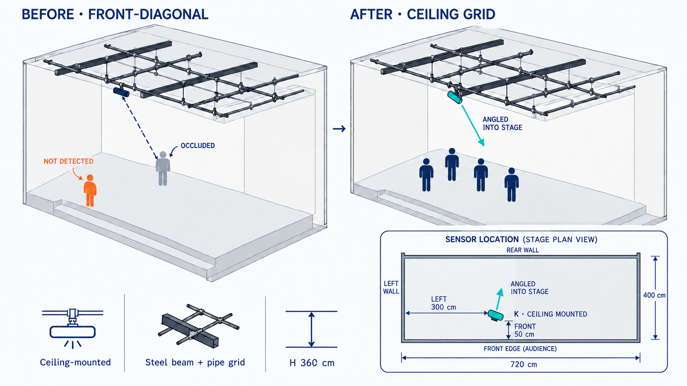
설치 계획 개념도 — 감지 범위는 현장 테스트로 확인
P1 은 바닥, P2·P3·P4 는 정면·왼쪽·오른쪽 벽을 맡습니다. 프로젝터는 시설 세팅을 그대로 쓰고, 면 맞춤은 MadMapper 맵핑으로 합니다.
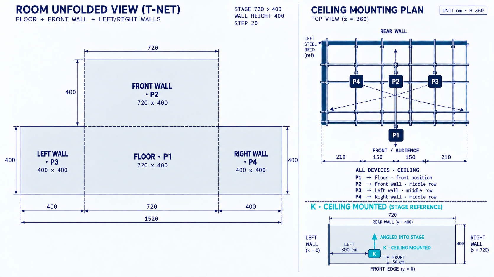
면 크기: 바닥·정면 벽 720 × 400 · 좌우 벽 400 × 400 (cm) · 프로젝터 위치·각도는 대여 시설 고정값 (변경 불가)
프로젝터는 시설 철골에 고정된 그대로 쓰고, 우리가 추가하는 키넥트만 같은 철골에 부착합니다.
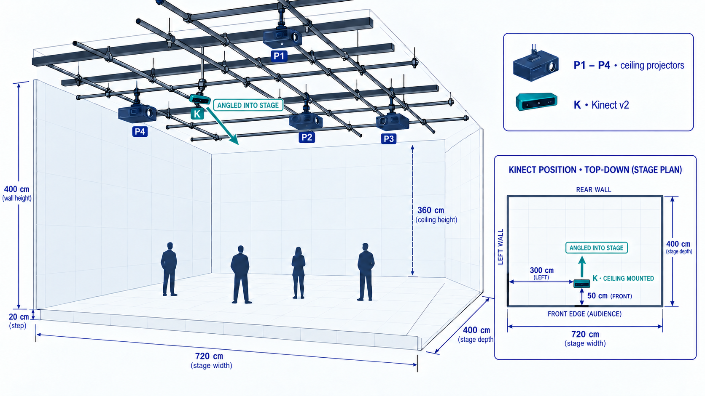
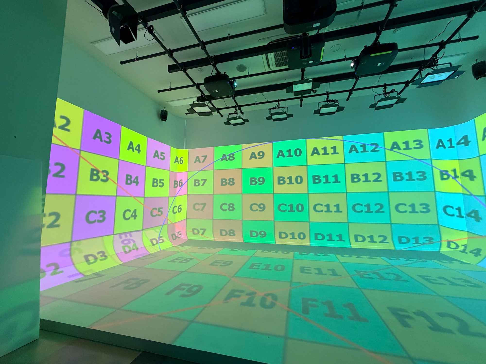
현장 참조 · 호라이즌 스튜디오 천장천장 구조 개념도 · 최종 프로젝터 배치는 20p 기준